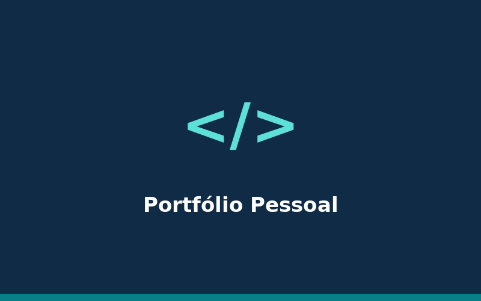
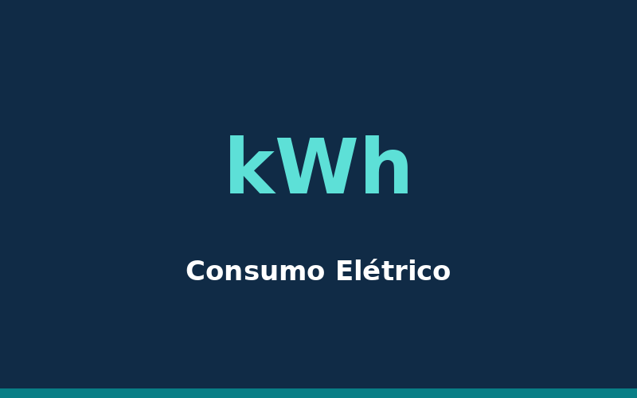
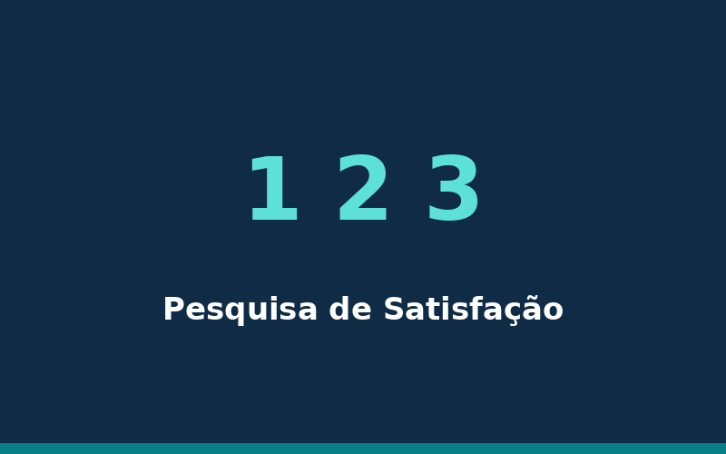

Técnico em Processos | Planejamento Industrial e PCP | Desenvolvimento de Sistemas
Planejamento Industrial, PCP e Métodos e Processos + Tecnologia
Sou Técnico em Processos, com mais de 20 anos de experiência nas indústrias aeronáutica e industrial. Foram quase 18 anos na Embraer, onde comecei na produção e cheguei a Métodos e Processos, atuando também em Tempos e Métodos, Planejamento e Controle da Produção (PCP) e como Key User na implantação do SAP.
Hoje sou Planejador e Controlador de Produção e uno essa experiência ao curso de Desenvolvimento de Sistemas: conheço os processos de dentro da fábrica e estou aprendendo a criar os sistemas que ajudam a organizá-los.
Meu diferencial: entender o problema do jeito que quem está na produção enxerga e usar a programação para resolvê-lo, criando soluções que organizam processos, controlam dados e reduzem desperdícios.
São José dos Campos/SP
Sistemas para a indústria: controle de dados, indicadores e automação de rotinas
MBA em Gestão de Processos e Técnico em Desenvolvimento de Sistemas (cursando)
Unir processos industriais e tecnologia em soluções digitais
Da produção aeronáutica ao desenvolvimento de sistemas.
TWA Equipamentos e Serviços | Nestlé – Caçapava
Cronogramas no MS Project, acompanhamento de prazos com Curva S, indicadores (KPIs), análise de desvios e melhoria contínua.
Prefeitura de São José dos Campos e GAVID Estruturas Metálicas
Organização de equipes, controle de materiais e padronização de rotinas.
Thruone Group
Análise de processos aeronáuticos, tempos padrão (MTM) e documentação de processos.
Campanati Serviços Comerciais
Criação e edição de imagens e vídeos para redes sociais e divulgação de marcas.
Associação MTM do Brasil
Definição de tempos padrão em processos aeronáuticos com a metodologia MTM.
Embraer – quase 18 anos de empresa
Comecei na produção (materiais compósitos e montagem estrutural) e cheguei a Técnico em Processos: roteiros de fabricação, redes de precedência, redução de ciclo, projeto HEAI na China e Key User na implantação do SAP.
Alpargatas, McQuay do Brasil, Dabi Atlante e Grupo Sete Estrelas
Ferramentaria, desenhos técnicos, cadastro de materiais em sistema ERP e melhorias em processos de fabricação.
ETEC – Escola Técnica Estadual de São Paulo
Universidade Cidade de São Paulo
Universidade Cidade de São Paulo
Colégio Técnico ETEP
SENAI São Paulo
Alguns projetos e atividades que representam minha evolução na área de desenvolvimento.

Este site, feito com HTML, CSS, Bootstrap e JavaScript para apresentar meu perfil, minha trajetória e meus projetos.
Ver projeto
Programa em Python que calcula quanto um aparelho gasta de energia por mês (em kWh) e quanto isso custa em reais.
Ver projeto
Programa em Python que coleta nome, idade e opinião dos clientes, valida as respostas e mostra o total de cada avaliação.
Ver projetoAberto a oportunidades em Planejamento Industrial, PCP, Métodos e Processos, Melhoria Contínua e Tecnologia.
Estou disponível para conversar sobre vagas, projetos e parcerias nas áreas de Planejamento Industrial, PCP, Métodos e Processos, Melhoria Contínua e Desenvolvimento de Sistemas.
Localização: São José dos Campos/SP